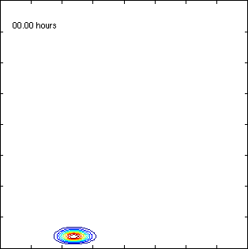
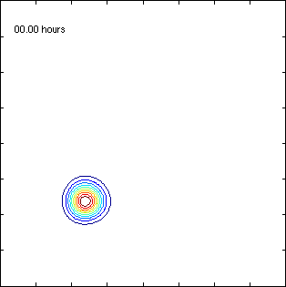

Bistable system
 
A biological toggle switch can be formed by two mutually
cooperatively repressing gene products. Left: suppose that
initially, the number of molecules of one of the species dominates
the other species. Then the production of that species is
inhibited and the system finds a stable state. However, by a
certain small probability the stochastic noise can make the system
switch and due to this 'tunneling' effect, the roles of the two
species suddenly change. Right: here the system starts with the
same number of molecules of both kinds and the system becomes
symmetric; this example demonstrates the sensivity with respect to
the initial configuration.
Toggle switches are interesting entites because they can be though
of as a biological transistor. Not much effort needs to be spent
in switching the state of the system ("1" or "0") and, depending
on the parameters of the reactions, the switch will with high
probablity remain in its state.
(Plot info: each axis tick is 25 molecules and the contour levels
have been chosen by Matlab)
References
S. Engblom: Spectral Approximation of Solutions to the Chemical
Master Equation, in J. Comput. Appl. Math.
229(1):208--221,
2009: (doi)
S. Engblom: Galerkin Spectral Method applied to the
Chemical Master Equation, in Commun. Comput. Phys.
5(5):871--896,
2009: (abstract), (pdf).
Stefan Engblom
Last modified: Fri Sep 6 14:54:29 CEST 2024